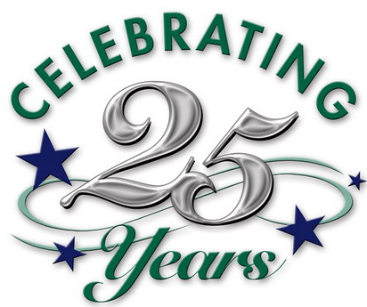

PGI'sforLiteracy
Newfoundland and Labrador
Improving Lives through Literacy for 25 Years

PGI 2015 Dates
Children’s Literacy Festival – Wednesday, June 17, 2015
PGI Charity Golf Tournament – Friday, June 19, 2015

Click the image above
to visit BallyHaly.com
In 1986, award-winning Canadian broadcaster and journalist Peter Gzowski began raising funds for literacy through an annual golf tournament, The Peter Gzowski Invitational (PGI) – a single event that evolved into the national PGIs for Literacy. His goals were to raise much-needed resources for the thousands of adult learners who struggle with the challenge of low literacy, and have a lot of fun in the process.
Held annually in every province and territory, the PGIs have raised more than $13 million net since 1986. These funds directly support literacy initiatives in the provinces and territories where the PGIs are held.
Thank-you for supporting the PGIs in Newfoundland and Labrador.

"Imagine this; you get out there for a game of golf. You bogey, birdie, mulligan, drive, heckle your buddy's putt, and then crack a cold one... And you raise millions of dollars to help people learn to read!"
- Rick Mercer, CBC

Click on the "Register Today" button below to reserve your spot in this year's PGI!

To make a contribution ot this years PGIs for Literacy
(in-kind or financial),
please click Button below